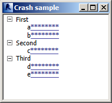
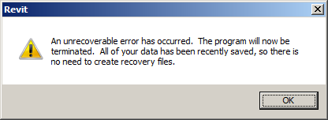
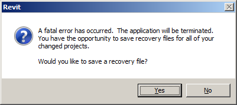

Handle Your Own Exceptions
I was under the impression that it should be hard for an add-in to crash Revit.
Therefore, it was a surprise yesterday to receive an add-in displaying a form and instructions to reliably cause Revit to terminate unexpectedly with just two or three clicks.
The reason is simple, however, as we shall see below, and underlines once again how hard it is to properly implement and handle any modeless activity within a Revit add-in.
Important aspects were discussed in the recommendation to avoid Idling and numerous other places.
Yesterday, an experienced Revit add-in developer provided this sample add-in causing an unrecoverable error using read-only transaction mode and making no database access at all.
It does however display a modeless form like this:

An unrecoverable error in Revit can be triggered by simply:
- Launching the add-in external command.
- Clicking on 'First'.
- Clicking on 'b***'.
- Hitting the up arrow keyboard key.
Running it outside the Visual Studio debugger causes an unrecoverable error:

If Revit is running within the Visual Studio debugger, the following detailed reason for the crash is listed (copy and paste somewhere or view source to see truncated lines in full:
System.InvalidOperationException was unhandled
HResult=-2146233079
Message='System.Windows.Documents.Hyperlink' is not a Visual or Visual3D.
Source=PresentationCore
StackTrace:
at MS.Internal.Media.VisualTreeUtils.AsVisual(DependencyObject element, Visual& visual, Visual3D& visual3D)
at System.Windows.Media.VisualTreeHelper.GetParent(DependencyObject reference)
at System.Windows.Controls.TreeViewItem.AllowHandleKeyEvent(FocusNavigationDirection direction)
at System.Windows.Controls.TreeViewItem.HandleUpDownKey(Boolean up, KeyEventArgs e)
at System.Windows.Controls.TreeViewItem.OnKeyDown(KeyEventArgs e)
at System.Windows.RoutedEventArgs.InvokeHandler(Delegate handler, Object target)
. . .
at System.Windows.Threading.Dispatcher.LegacyInvokeImpl(DispatcherPriority priority, TimeSpan timeout, Delegate method, Object args, Int32 numArgs)
at MS.Win32.HwndSubclass.SubclassWndProc(IntPtr hwnd, Int32 msg, IntPtr wParam, IntPtr lParam)
InnerException:
I initially assumed that the Revit API framework should have prevented this error from causing any issues with the main Revit process and reported the issue to the development team, who provided some very illuminating clarification:
This add-in is running inside Revit's process space and did not handle an exception, so Revit's own built-in uncaught exception handler took over. This seems to be working as best as it can – the uncaught exception will eventually unwind to end the process anyway.
Add-ins should manage their own exceptions to provide a more user-friendly response and avoid this situation.
Of course, Revit does protect itself from badly behaved add-ins.
It can only do so when it has any knowledge of them, though, for example when the add-in is called via events, commands, or interfaces. In all those cases the exception is caught and swallowed, with the possibility of disabling some part of the add-in and/or notifying the user.
However, if an add-in launches its own thread and does illegal things outside of Revit's knowledge, there's nothing we can do to stop it.
Furthermore, Revit does indeed protect the user in that any modified document in this scenario causes a prompt to save it. When retesting the steps listed above inside a modified project document, not running within the debugger, Revit's built-in unrecoverable error handler politely prompts me to save my changes:

So, to summarise, please make sure you handle any exceptions that your add-in might cause.
Revit does a very good job of encapsulating the add-in functionality.
Within every valid Revit API context, any exceptions you cause are caught and reported by Revit without affecting the main thread. Still, you should probably handle them yourself to provide a more graceful report to the user.
Outside of the Revit API context, your exceptions cannot be treated any different from any other completely unexpected situation and will cause the Revit error handler to be triggered as explained above, which will presumably seriously irritate your users.